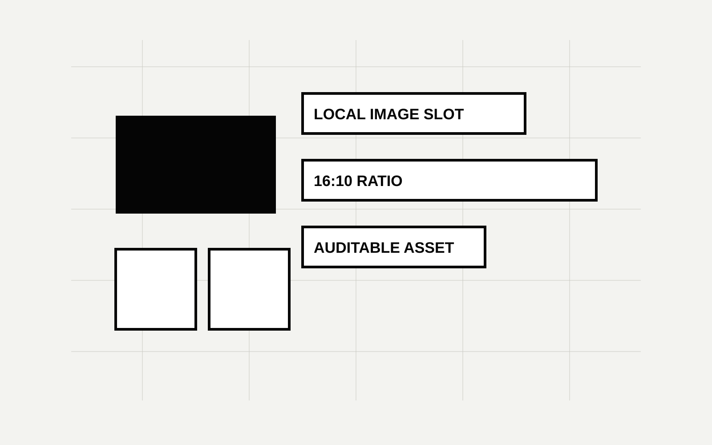

01. HTML BENCHMARK
HTML needs a production lock.
The lane only becomes reliable when story, visual system, registered layouts, and rendered QA are treated as one contract.
02. TENSION
The enemy is not bad CSS.
The real failure is slide-by-slide invention: each page may look fine, while the deck loses rhythm, proof, and QA discipline.
03. OPERATING CONTRACT
Story, system, and QA come first.
The HTML file is the final surface. The controllable object is the production contract before it.
04. IMAGE SLOT
Image slots must be owned.
A local visual is useful only when it has a slide number, target ratio, alt text, and a reason to exist.

05. VALIDATION VS TASTE
Validation and taste catch different bugs.
A benchmark lane needs both: deterministic checks for structure, visual artifacts for judgment.
Static validation
Finds missing attributes, weak titles, image-slot defects, theme streaks, and unresolved markers.
Visual QA
Finds crowding, weak rhythm, blank render, poor image crop, and the feeling that the deck is not yet first-rate.
06. PROCESS
The benchmark path is a loop.
07. LAYOUT SYSTEM
Taste becomes reusable when layouts are named.
08. AUDIT ARTIFACTS
A benchmark deck leaves evidence.
The case includes a plan, HTML file, local image asset, screenshot artifact, contact sheet, and QA report.
09. RELEASE GATE
The next quality jump is visual evidence.
Knowledge Cat becomes benchmark-grade when every serious HTML deck proves itself with screenshots, contact sheet, validator output, and a documented fix loop.